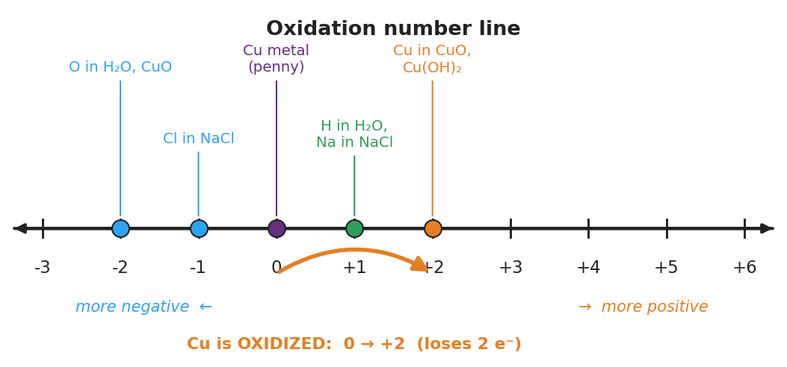

01 Phenomenon
Your teacher shows two pennies. One is bright, shiny, and reddish-orange — fresh copper metal. The other is old and has turned a soft green. Nothing was painted on or added to the green penny on purpose. The same thing happened to the Statue of Liberty: she arrived in 1886 a gleaming copper-orange and is now completely green. The copper did not wash away. The copper atoms themselves reacted with oxygen and moisture in the air and changed. Today you will learn how chemists put a number on exactly what changed.
02 Driving question
Why does a shiny new copper penny eventually turn green?
03 Notice & wonder
| I notice… | I wonder… |
|---|---|
Turn & Talk #1: The bright penny is pure copper metal. The green penny is copper that has joined with oxygen. If you wanted to put a number on how much the copper changed when it reacted, what would that number be measuring? In one sentence, what is different about a copper atom bonded to oxygen versus a copper atom standing alone in the metal?
04 Initial model
Before your teacher names any rule, use what you already know about ions and neutral elements to give each atom a “charge label.”
| Species | What kind of thing is it? | Your charge label for each atom |
|---|---|---|
| Cu (bright penny) | a free metal | Cu = ____ |
| O₂ (oxygen in air) | a free element | O = ____ |
| Na⁺ | a single ion | Na = ____ |
| Cl⁻ | a single ion | Cl = ____ |
| NaCl | a compound (Na⁺ + Cl⁻) | Na = ____ , Cl = ____ |
What charge label did you give a copper atom that is just sitting in the bright penny, surrounded by other identical copper atoms? ____________
Why does that label make sense? Has the copper atom given electrons to anything different from itself?
05 Investigate
Part 1 — ABCs: Assign across the tarnishing reaction
Here is the simplified reaction for a penny tarnishing. Using your charge labels, assign a number to every atom on both sides. Then circle the atom whose number changed.
2 Cu + O₂ → 2 CuO
| Cu (in Cu metal) | O (in O₂) | Cu (in CuO) | O (in CuO) | |
|---|---|---|---|---|
| Oxidation number |
Which atom’s number went up (became more positive)? ____________ From ____ to ____.
Which atom’s number went down (became more negative)? ____________ From ____ to ____.
For CuO: oxygen carries its usual label of −2. The whole compound CuO has no overall charge. What must copper be so that copper + (−2) adds to zero? ____________
Part 2 — Use the rule card
Your teacher now hands out the rule card. Use it to assign the oxidation number of each atom in every formula below. Show which rule you used.
Rules: (1) free element = 0; (2) monatomic ion = its charge; (3) oxygen = −2; (4) hydrogen = +1; (5) the oxidation numbers add up to 0 in a neutral compound (or to the ion’s charge in a polyatomic ion).
| Formula | Atom | Rule used | Oxidation number |
|---|---|---|---|
| Cu | Cu | ||
| O₂ | O | ||
| CuO | O | ||
| CuO | Cu | ||
| H₂O | H | ||
| H₂O | O | ||
| NaCl | Na | ||
| NaCl | Cl | ||
| Cu(OH)₂ | O | ||
| Cu(OH)₂ | H | ||
| Cu(OH)₂ | Cu |
Tip for Cu(OH)₂: assign the atoms you know first (each O is −2, each H is +1). There are two OH groups. Then solve for copper so the whole formula adds to zero.
Part 3 — Reading the number line
Look at figures/oxidation_number_line.png:

On the number line, where is copper in the bright penny? ____________
Where is copper in the green (tarnished) penny? ____________
The arrow on the figure points to the right, toward more positive. In one sentence, what does moving to the right on this line mean is happening to the atom?
06 Make it make sense
For each formula below, assign the oxidation number of the requested atom. Show your reasoning (assign the fixed-rule atoms first, then solve for the unknown). These are the same formulas you practiced in the Investigation — confirm your work here.
1. CuO — oxidation number of copper
Oxygen = ____ (rule ). Compound is neutral, so Cu must be: _
2. Cu(OH)₂ — oxidation number of copper
Each O = ____ , each H = ____. Two OH groups contribute ____ total. Cu must be: ____
3. NaCl — oxidation number of sodium and chlorine
Na = ____ (rule ). Cl = _ (rule ). They add to: _
4. In the reaction 2 Cu + O₂ → 2 CuO, which atom is oxidized and which is reduced? Give the number change for each.
Oxidized: ____________ ( ____ → ____ ) Reduced: ____________ ( ____ → ____ )
07 Key vocabulary
- oxidation number
- a signed charge label assigned to each atom that tracks electron bookkeeping; it is the charge the atom would have if every bond were treated as fully ionic; found by applying a fixed rule set (free element = 0; oxygen = −2; hydrogen = +1; sum equals the overall charge)
- oxidized
- describes an atom whose oxidation number *increases* during a reaction, which means it *loses* electrons (e.g., copper goes from 0 to +2 as a penny tarnishes); on the number line the atom moves to the right
- reduced
- describes an atom whose oxidation number *decreases* during a reaction, which means it *gains* electrons (e.g., oxygen goes from 0 to −2 as it reacts with copper); on the number line the atom moves to the left; reduction always accompanies oxidation
Use each term in a sentence about today’s phenomenon or investigation. Do not copy the definition — describe something you actually assigned, observed, or reasoned through.
oxidation number: _______________________________________________ _______________________________________________
oxidized: _______________________________________________ _______________________________________________
reduced: _______________________________________________ _______________________________________________
08 Revise your model
Return to your Initial Model and your tarnishing-reaction work. Add vocabulary labels:
Next to copper’s change (0 → +2), write the word: ____________
Next to oxygen’s change (0 → −2), write the word: ____________
On the number line, draw an arrow for what happens to oxygen during tarnishing. Which direction does it point, and what is that change called? ____________
Then finish this Because / But / So sentence:
When a copper penny tarnishes, the copper is oxidized because __________________________________________, but __________________________________________, so __________________________________________.
09 Exit ticket
(a) Assign the oxidation number of nitrogen in HNO₃. Assign H and O first, then solve for N.
H = ____ (rule ) · each O = _ (rule ) · three O total = _ Sum must equal ____ (the compound is neutral), so N = ____
(b) Assign the oxidation number of sulfur in Na₂SO₄. Assign Na and O first, then solve for S.
Each Na = ____ · two Na total = ____ · each O = ____ · four O total = ____ Sum must equal ____, so S = ____
(c) When iron rusts, neutral iron metal (Fe) becomes Fe³⁺ in rust. In one sentence, state whether the iron is oxidized or reduced, and explain how the oxidation number tells you.
10 Explore further
- Tarnishing demonstration (teacher-run, set up before class): Place a bright copper penny (or a strip of copper foil) and a piece of clean silver (a silver coin or clean silver-plated spoon) where students can see them. Show, alongside, a tarnished penny and a tarnished silver item prepared in advance (a penny soaked in salt-and-vinegar then left to air-dry develops a green-blue film; silver left exposed or briefly warmed with a sulfur source darkens). Students compare bright vs. tarnished and record what changed. Discussion: the atoms went from a free element (oxidation number 0) to a compound (a positive oxidation number). No external URL is required; the demonstration uses common materials. For a digital option, a Javalab "redox / oxidation states" interactive can preview the idea, but the physical bright-vs-tarnished comparison is the anchor.
- Oxidation-number practice (core activity, ABCs before vocabulary): Using the periodic table and a short rule card, students assign oxidation numbers to every atom in a set of formulas (Cu, O₂, CuO, H₂O, NaCl, Cu(OH)₂), then identify which atom *changed* its oxidation number across the tarnishing reaction. Each assignment is recorded in a structured table: formula | atom | rule used | oxidation number. This is the central skill of the lesson.
- Number-line reading: Students read and interpret `figures/oxidation_number_line.png` to locate the oxidation number of copper before and after tarnishing and to describe, in words, the direction of the change (0 → +2).